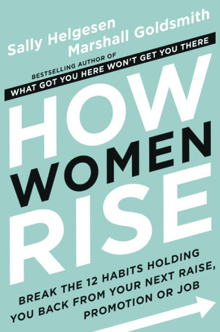
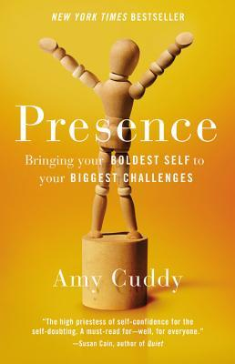

About the Author

Dr. Lois P. Frankel, PhD
Key Talks & Interviews
Watch Dr. Lois Frankel break down the "Nice Girl Syndrome" and discuss career advancement strategies:
Why do some women achieve career milestones seamlessly while others work twice as hard with little recognition? Take the Self-Assessment Quiz from Chapter 1 to evaluate your behaviors across 7 core categories, and generate a personalized reading schedule tailored to your growth areas.
In *Nice Girls Don't Get the Corner Office*, executive coach Dr. Lois P. Frankel reveals that women are not failing to succeed due to lack of talent or ambition. Rather, they are held back by unconscious, self-defeating behaviors learned in childhood.
Socialized to be "nice"—polite, quiet, accommodating, and nurturing—women carry these rules into the workplace, where they translate into career barriers. This interactive workbook breaks down 133 common mistakes categorized into 7 core behavior domains.
Click on any category branch below to explore its details (once you unlock your reading schedule!):
Using the scale below, indicate the degree to which each statement is true of you. Be completely honest—this is a tool to help you transition from a nice girl to a winning woman.
Category Score: 0 / 28
A friend and I were discussing the Olympics soon after the closing ceremony. I remarked that I loved seeing people achieving the goals they had strived for their entire lives. She, on the other hand, said she didn’t like how competitive it was. “It’s the Olympics!” I blurted out. “They’re supposed to be competitive.” Business is no different. It has rules, boundaries, and strategies. If you don't play the game, you can't win.
Category Score: 0 / 28
In Shakespeare's As You Like It, we are reminded: "All the world’s a stage, and all the men and women are merely players." Success in business depends on your ability to know your part and play it professionally. Just as actors are judged by their performance, we are evaluated by whether we understand the nuances of executive presence and behavior.
Category Score: 0 / 28
Changing how you think about how you work is essential to changing self-defeating behavior. Most of us have notions about what will get us recognized and what won't. These are "superstitious behaviors"—like believing we must work harder than everyone else to be rewarded. This chapter reframes these childhood socialization rules.
Category Score: 0 / 28
When you think of Coke, Kleenex, or Google, they are synonymous with the value they deliver. Brand names get a reputation as a result of consistent quality and strategic visibility. You are a brand too. If you are waiting to be noticed rather than defining and promoting your professional brand, you are holding yourself back.
Category Score: 0 / 28
There is a Chinese proverb: "May you have a wonderful idea and not be able to convince anyone of it." The best ideas fall on deaf ears if they are not communicated with executive credibility. This chapter breaks down vocal fillers, qualifiers, preambles, and the famous Mehrabian rule of message components.
Category Score: 0 / 28
This section examines the physical things you may unconsciously or habitually do that contribute to perceptions of being less capable than you are. We focus on physical presence, body language, facial gestures, eye contact, and attire. Because visual behaviors are easily identifiable, modifying them provides a quick win.
Category Score: 0 / 28
So far, we've looked at active behaviors that diminish credibility. Here, we examine how you respond to how others treat you. Often these responses are so automatic—like playing along, being overly polite, or absorbing inappropriate treatment—that we don't realize the massive damage they do to our careers.
Watch Dr. Lois Frankel break down the "Nice Girl Syndrome" and discuss career advancement strategies:
Continue your professional development with these 3 highly recommended books for female leadership and empowerment.
Sheryl Sandberg's ground-breaking book focuses on sitting at the decision-making table, seeking challenges, and pursuing careers with intention. It combines personal anecdotes, hard data, and social research to explain why women hold back.

Sally Helgesen and Marshall Goldsmith identify 12 specific, self-limiting habits that block successful women from reaching the next level. It offers actionable templates to help women claim credit for achievements and build alliances.

Social psychologist Amy Cuddy explains how body language and high-power poses physically change body chemistry, boosting confidence and presence during high-stakes job interviews, presentations, and daily encounters.
Explore other insightful guides curated and discussed by our member community.
Nobel Prize winner Richard Thaler and Harvard Law Professor Cass Sunstein show how we can use "choice architecture" and subtle nudges to make better decisions for ourselves, our families, and our society. Learn the principles of libertarian paternalism and how choices are designed behind the scenes.